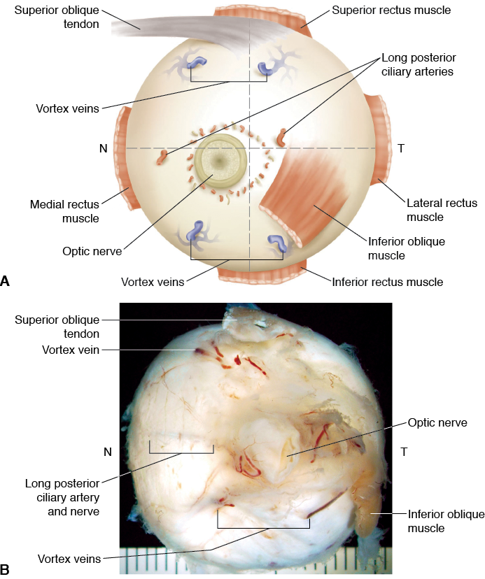
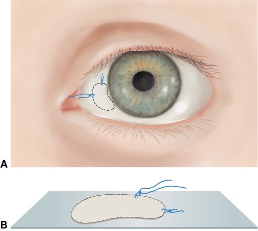
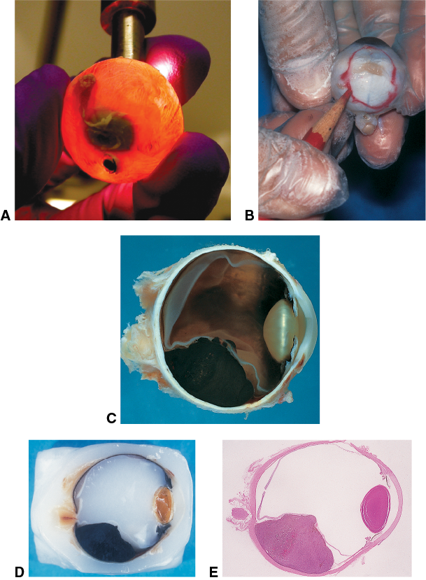
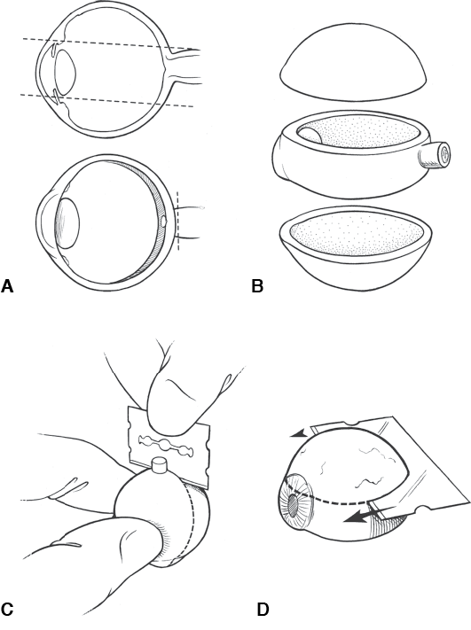

CHAPTER2
Specimen Handling
This chapter includes a related video. Go to www.aao.org/bcscvideo_section04 or scan the QR code in the text to access this content.
Highlights
Overview
This chapter covers the methods that pathology laboratories use to process tissue specimens with the final product being glass slides. These specimens include globes and ocular adnexal biopsy tissues, as well as specimens requiring evaluation of surgical margins. The main steps for processing of specimens are
The most common method used to make the tissue firm enough to be cut into thin sections is embedding in paraffin and cutting sections (permanent sections), which is discussed in this chapter. Another method used, typically for evaluation of surgical margins of resection, is frozen section, which is discussed in Chapter 3. Permanent sections are always preferred in ophthalmic pathology because this technique allows better preservation of morphological features than do frozen sections, which are prone to artifact.
Discussion between the ophthalmologist and the pathologist prior to the biopsy or surgery is important, as it enables them to determine the best way to collect a specimen and submit it to the laboratory. The following section discusses this topic.
Communication
Communication with the pathologist before, during, and after surgical procedures is an essential aspect of quality patient care. Standards for the technical handling of specimens and reporting of results have been developed; a few are available online at no cost. The ophthalmologist is responsible for providing relevant details regarding the clinical history when submitting the specimen to the laboratory. This history facilitates clinicopathologic correlation and enables the pathologist to provide the most accurate interpretation of the specimen. The final histologic diagnosis reflects successful collaborative work between clinician and pathologist.
In general, communication can usually be accomplished via the pathology request form and the pathology report. However, if there are any special circumstances, such as suspicion of malignancy or identification of a critical diagnosis, direct and personal communication between the ophthalmologist and the pathologist is essential. Discussion prior to surgery allows these physicians to consider the best way to collect a specimen and submit it to the laboratory. For example, the pathologist may wish to have fresh tissue for immunofluorescent staining and molecular diagnostic studies, glutaraldehyde-fixed tissue for electron microscopy, and formalin-fixed tissue for routine paraffin embedding. If the tissue is simply submitted in formalin, the opportunity to perform certain studies may be lost, resulting in a less definitive diagnosis. Communication between clinician and pathologist is especially important in ophthalmic pathology, in which specimens are often very small and require particularly careful handling. In some cases, careful selection of the surgical facility is necessary to ensure proper specimen handling. See Chapter 3, Table 3-1, for a preoperative checklist addressing the handling of ophthalmic pathology specimens.
Anytime a previous biopsy has been performed at the site of the present pathology, the clinician should request a review of the prior biopsy slides if possible, especially if there is a history of malignancy, so that the pathologist can compare the current and prior morphological features and diagnoses. The surgical plan may be altered substantially if the initial biopsy was thought to represent, for example, a basal cell carcinoma when in fact the disease was sebaceous carcinoma. In addition, when the case is reviewed in advance, the pathologist is able to interpret intraoperative frozen sections more accurately.
If there is a significant discrepancy between the clinical diagnosis and the histologic diagnosis, the ophthalmologist should promptly contact the pathologist directly to resolve the discrepancy. For example, merely correcting the patient age on the pathology request form may change the interpretation of melanocytic lesions of the conjunctiva from benign to malignant, or vice versa.
College of American Pathologists. Cancer protocol templates. Accessed September 17, 2019. https://www.cap.org/protocols-and-guidelines/cancer-reporting-tools/cancer-protocol-templates
Grossniklaus HE, Hyrcza M, Jain D, et al. Eye. PathologyOutlines.com. Accessed September 17, 2019. www.pathologyoutlines.com/eye.html
Fixatives for Tissue Preservation
Table 2-1 lists many of the fixatives and transport media used by pathology laboratories for various forms of analysis. The most commonly used fixative is 10% neutral-buffered formalin. Formalin is a 40% solution of formaldehyde that stabilizes proteins, lipids, and carbohydrates and prevents enzymatic destruction of the tissue (autolysis) by crosslinking proteins. In general, the volume of the fixative in which tissue is immersed should be at least 10 times the volume of the tissue. Formalin diffuses fairly quickly through tissue. Tissue fixation time varies depending on the size and composition of the specimen. When a globe is to be sent for pathologic evaluation, it is not necessary or desirable to open the eye, inject fixative, or create windows in the sclera, despite the relatively large size and volume of the globe. Furthermore, opening an eye before fixation may damage or distort sites of pathology, making histologic interpretation difficult or impossible. To ensure adequate fixation, an eye should be suspended in formalin (at least a 10:1 ratio of fixative to tissue) for at least 24–48 hours before processing. As different institutions may use different protocols, preoperative consultation with the pathologist is critical.
Specimen Orientation
Globes may be oriented according to the location of the extraocular muscles and of the long posterior ciliary arteries and nerves, which are located in the horizontal meridian. The medial, inferior, lateral, and superior rectus muscles insert progressively farther from the limbus. Locating the inferior oblique muscle insertion relative to the optic nerve is helpful in distinguishing between a right eye and a left eye. The inferior oblique inserts on the sclera temporally over the macula, with its fibers running inferiorly (Fig 2-1). Once the laterality of the eye is determined, accurate location of ocular lesions is possible.
When eyelid or conjunctival tissue is sent for pathologic evaluation, it may be important in some clinical situations to evaluate the resection margins (ie, determine whether the lesion is present in the margins of resection). Note that the smaller a tissue sample is, the more difficult it will be to accurately assess the surgical margins. If the tissue rolls up or bunches, it can be difficult to orient. Furthermore, once the tissue is fixed in formalin, it cannot be reshaped. For these reasons, when the biopsy specimen is obtained, it should be unrolled and placed on a dry piece of filter paper or similar absorptive to keep it flat. The tissue should be allowed to adhere to the paper for several seconds, and then the paper with the tissue can be floated in a container of formalin.
To properly orient a specimen, the pathologist needs landmarks. Therefore, before the biopsy tissue is placed in formalin, it must be marked in some way to enable correct orientation of the surgical margins; a corresponding diagram indicating the meaning of the marks must also be created. The best way to mark tissue is to use sutures (long and short) positioned 90° apart (Fig 2-2). Small sutures may look large with surgical magnification, but they are difficult to see in the pathology laboratory; thus, sutures that are visible with the naked eye should be used. Ink is not a good way to mark tissue because most types of ink, including permanent marker and surgical marking ink, dissolve in formalin.
Labeling both the specimen container and the paperwork with 2 patient identifiers is mandatory before submission to the pathology laboratory. The diagram should be submitted along with the specimen.
Gross Examination and Dissection
The objective of gross examination and dissection is to prepare the specimen for histologic sectioning. This typically includes describing the physical appearance of the tissue; measuring it; orienting the tissue as clinically indicated; and possibly cutting the tissue into smaller, more manageable pieces. All types of tissues submitted to the pathology laboratory undergo some type of gross examination and/or dissection prior to tissue processing into paraffin. The remainder of this discussion is focused on gross examination and dissection of a globe.
Dissection of a globe includes opening it in such a way as to display as many of the pathologic changes as possible on a single slide. Before gross dissection, the globe is transilluminated with bright light. This helps identify intraocular lesions such as tumors, which block the transilluminated light and cast a shadow (Fig 2-3A). The shadow can be outlined on the sclera with a marking pencil (Fig 2-3B). This outline can then be used to guide the dissection so that the center of the section includes the maximum extent of the area of interest (Fig 2-3C–E).
Most eyes are cut so that the pupil and optic nerve are present in the same section, called the pupil–optic nerve (PO) section. The meridian, or clock-hour, of the section is determined by the unique features of the case, such as the presence of an intraocular tumor or a history of previous surgery or trauma. In routine cases, globes with no prior surgery or intraocular neoplasm are typically opened in the horizontal meridian, which includes the macula in the same section as the pupil and optic nerve (Fig 2-4). Globes with a surgical or nonsurgical wound should be opened such that the wound is perpendicular to, and included in, the PO section. Globes with intraocular tumors are opened horizontally, vertically, or obliquely to place the center of the tumor, as outlined by transillumination, in the PO section (Video 2-1).
VIDEO 2-1 Gross dissection of the eye.
Courtesy of Ralph C. Eagle Jr, MD.
Go to www.aao.org/bcscvideo_section04 to access all Section 4 videos.
The globe can also be opened coronally with separation of the anterior and posterior segments, allowing a clinician’s view of posterior segment pathology.
Processing and Staining
Tissue Processing
Tissue processing involves dehydration of the specimen to allow infiltration of the tissue with paraffin. The tissue is then embedded in a paraffin block, which mechanically stabilizes the tissue, enabling it to be cut into very thin sections.
The organic solvents used in tissue processing—for example, ethanol and xylene—dissolve lipids and may dissolve some synthetic materials. Routine processing usually dissolves intraocular lenses made of acrylic or silicone but does not dissolve sutures made of silk, nylon, or other synthetic materials.
The processing of a routine specimen usually takes a day. Techniques for the rapid processing of special surgical pathology material are generally reserved for small biopsy specimens that require urgent handling. Rapid processing usually results in inferior tissue preparations and therefore should not be requested routinely. Surgeons should communicate directly with their pathologists about the availability and shortcomings of these techniques.
Slide Preparation and Tissue Staining
Tissue sections in paraffin are usually cut at 4–6 μm. The cut section is colorless except for areas of indigenous pigmentation. Various tissue dyes—principally hematoxylin and eosin (H&E) and periodic acid–Schiff (PAS)—are used to stain the tissue section in order to visualize the tissue under the microscope. The stains provide contrast and color, making it possible for pathologists to identify cellular elements (nuclear versus cytoplasmic). They also highlight various cellular and extracellular structures, depending on their chemical composition (Table 2-2). A small amount of resin is placed over the stained section and covered with a thin glass coverslip to protect and preserve it.
Special histochemical stains
Pathologists employ special histochemical stains to identify organisms and constituent substances present in tissue, supplementing the information available through examination of tissue using routine stains such as H&E. Special stains are typically performed on the basis of changes identified by the pathologist on routine stains or when a particular diagnosis is suspected clinically. These stains are performed on permanent sections, with the exception of oil red O, which requires a frozen tissue section instead of paraffin-processed tissue. See Table 2-2, which lists the histochemical stains commonly used in ophthalmic pathology.
|
Table 2-1 Fixatives Used in Ophthalmic Pathology |
||||
|
Fixative |
Color |
Examples of Use |
||
|
10% neutral-buffered formalin (NBF) |
Clear |
Routine fixation of all tissues (eg, eyelid, conjunctiva, globe, orbital) |
||
|
Bouin solution |
Yellow |
Small biopsy specimens (eg, gastrointestinal tissue, conjunctiva) |
||
|
Absolute ethanol or methanol |
Clear |
Crystals (eg, corneal urate crystals) |
||
|
Cytology fixatives (ethanol, methanol, or Saccomanno fixative) |
Variety of colors |
Liquid specimens or smears (eg, vitreous, aqueous humor, fine-needle aspirates, corneal smears) |
||
|
Glutaraldehyde |
Clear |
Electron microscopy (eg, corneal microsporidia) |
||
|
Michel or Zeus transport mediuma |
Clear |
Immunofluorescence (eg, conjunctival biopsy for mucous membrane pemphigoid) |
||
|
Roswell Park Memorial Institute (RPMI) tissue culture mediuma |
Pink, salmon |
Tissue culture (eg, orbital tumor for cytogenetics or flow cytometry) or transport medium for molecular studies |
||
|
a Not a true fixative but prolongs tissue decomposition. |
||||

Figure 2-1 Posterior view of the right globe. N = nasal; T = temporal. A, Diagram. B, Macroscopic photograph. Note that the posterior ciliary artery and nerve appear as a subtle blue-gray line as they pass through the sclera. This marks the horizontal meridian of the globe. Also note that the rectus muscle insertions are not present. The rectus muscles are typically incised at their scleral insertion during enucleation so that they may be attached to the orbital implant. (Part A modified by Cyndie C. H. Wooley from an illustration by Thomas A. Weingeist, MD, PhD; part B courtesy of Nasreen A. Syed, MD.)

Figure 2-2 Marking the orientation of excised tissue for analysis of surgical margins. A, Sutures, 1 long and 1 short, are placed 90° apart. B, The tissue is carefully placed on a piece of filter paper and allowed to adhere for several seconds before it is placed in a container of formalin. (Illustration by Cyndie C. H. Wooley.)

Figure 2-3 Preparation of an intraocular tumor enucleation specimen. A, Transillumination shows blockage of light due to an intraocular tumor. B, The shadow is traced with a marking pencil. C, The opened eye shows the intraocular tumor that was demonstrated by transillumination. D, The paraffin-embedded eye shows the intraocular tumor. E, The hematoxylin-eosin (H&E)–stained section shows that the maximum dimension of the tumor, demonstrated by transillumination grossly, is in the center of the section, which also includes the pupil–optic nerve (PO) section. (Part A courtesy of Nasreen A. Syed, MD; part B courtesy of Hans E. Grossniklaus, MD.)

Figure 2-4 Gross dissection of a globe. A, The goal of sectioning is to obtain a PO section that contains the maximum area of interest. B, Two caps, or calottes, are removed to obtain a PO section. C, The first cut is generally performed from posterior to anterior. D, The second cut yields the PO section. (Illustration by Christine Gralapp.)
|
Table 2-2 Histochemical Stains Commonly Used in Ophthalmic Pathology |
||||
|
Stain |
Material Stained: Color |
Examples of Use |
||
|
Hematoxylin-eosin (H&E) |
Nucleus: blue Cytoplasm: pink |
General tissue stain (see Fig 2-3E) |
||
|
Periodic acid–Schiff (PAS) |
Glycogen and proteoglycans: magenta |
Descemet membrane (see Fig 6-14C, D), lens capsule, Bruch membrane, goblet cells |
||
|
Alcian blue |
Acid mucopolysaccharide: blue |
Cavernous optic atrophy (see Fig 15-10B) |
||
|
Alizarin red |
Calcium: red |
Band keratopathy |
||
|
Colloidal iron |
Acid mucopolysaccharide: blue |
Macular dystrophy (see Fig 6-23C, D) |
||
|
Congo red |
Amyloid: red orange, apple green with polarized light (dichroism) |
Lattice corneal dystrophy (see Fig 6-20C, D) |
||
|
Fite-Faraco |
Some acid-fast organisms: red |
Mycobacterium leprae |
||
|
Giemsa, Wright-Giemsa |
Some bacteria and parasites: blue |
Conjunctival Chlamydia (eg, trachoma), corneal Acanthamoeba |
||
|
Gomori or Grocott methenamine silver (GMS) |
Fungal elements: black |
Fungal Fusarium (see Fig 6-5B) |
||
|
Gram stain for tissue (Brown and Brenn [B&B], Brown and Hopps [B&H]) |
Gram-positive bacteria: blue Gram-negative bacteria: red |
Bacterial infection (see Fig 6-7B) |
||
|
KOH with calcofluor white |
Fungal elements |
Fungal infections (Stain usually performed in microbiology laboratory) |
||
|
Masson trichrome |
Collagen: blue Muscle: red |
Granular corneal dystrophy (see Fig 6-21C) Red deposits |
||
|
Oil red O |
Lipid: red |
Sebaceous carcinoma of eyelid |
||
|
Perls Prussian blue |
Iron: blue |
Fleischer ring |
||
|
Thioflavin T (ThT) |
Amyloid: fluorescent yellow-white |
Lattice corneal dystrophy |
||
|
Verhoeff–van Gieson (elastin) |
Elastic fibers: black |
Temporal artery elastic layer (see Fig 15-6B) |
||
|
von Kossa |
Calcium phosphate salts: black |
Band keratopathy (see Fig 6-10C) |
||
|
Ziehl-Neelsen |
Acid-fast organisms: red |
Mycobacterium tuberculosis and most other mycobacteria |
||